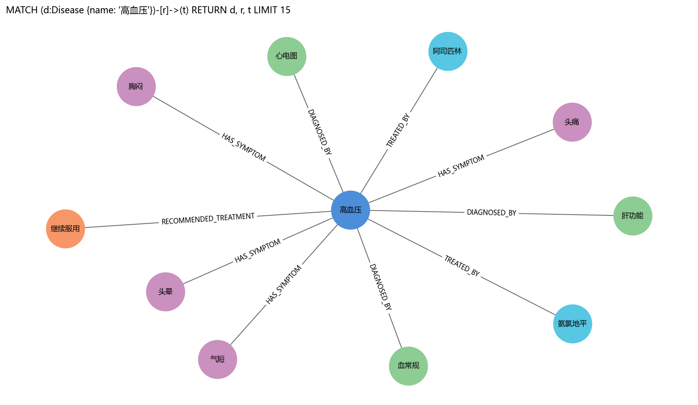

Neo4j 查询结果示意（2026-07-03，26 nodes / 29 edges）
由 medical_kg.json 与 task2_neo4j_live_smoke.json 读回一致；PNG 预览见 evidence/screenshots/neo4j/，答辩正文见 competition_defense_document.html §3.4.3。
节点入库总览
MATCH (n) RETURN labels(n) AS 标签, n.name AS 名称, n.type AS 类型 LIMIT 25
| labels(n) | n.name | n.type |
|---|
| ["Disease"] | 2型糖尿病 | Disease |
| ["Disease"] | 冠心病 | Disease |
| ["Disease"] | 支气管哮喘急性发作 | Disease |
| ["Disease"] | 高血压 | Disease |
| ["Drug"] | 二甲双胍 | Drug |
| ["Drug"] | 布洛芬 | Drug |
| ["Drug"] | 氨氯地平 | Drug |
| ["Drug"] | 辛伐他汀 | Drug |
| ["Drug"] | 阿司匹林 | Drug |
| ["Examination"] | 尿常规 | Examination |
| ["Examination"] | 心电图 | Examination |
| ["Examination"] | 肝功能 | Examination |
| ["Examination"] | 肺功能 | Examination |
| ["Examination"] | 血常规 | Examination |
| ["Examination"] | 血糖 | Examination |
| ["Symptom"] | 口渴 | Symptom |
| ["Symptom"] | 呼吸困难 | Symptom |
| ["Symptom"] | 喘息 | Symptom |
| ["Symptom"] | 多尿 | Symptom |
| ["Symptom"] | 头晕 | Symptom |
| ["Symptom"] | 头痛 | Symptom |
| ["Symptom"] | 气短 | Symptom |
| ["Symptom"] | 胸闷 | Symptom |
| ["Treatment"] | 对症治疗 | Treatment |
| ["Treatment"] | 继续服用 | Treatment |
以「高血压」为中心的关系查询（表格）
MATCH (d:Disease {name: '高血压'})-[r]->(t) RETURN d.name AS 疾病, type(r) AS 关系, t.name AS 目标 LIMIT 20
| d.name | type(r) | t.name |
|---|
| 高血压 | DIAGNOSED_BY | 心电图 |
| 高血压 | DIAGNOSED_BY | 肝功能 |
| 高血压 | DIAGNOSED_BY | 血常规 |
| 高血压 | HAS_SYMPTOM | 头晕 |
| 高血压 | HAS_SYMPTOM | 头痛 |
| 高血压 | HAS_SYMPTOM | 气短 |
| 高血压 | HAS_SYMPTOM | 胸闷 |
| 高血压 | RECOMMENDED_TREATMENT | 继续服用 |
| 高血压 | TREATED_BY | 氨氯地平 |
| 高血压 | TREATED_BY | 阿司匹林 |
关系图视图
MATCH (d:Disease {name: '高血压'})-[r]->(t) RETURN d, r, t LIMIT 15

节点类型分布
MATCH (n) RETURN labels(n)[0] AS 类型, count(*) AS 数量 ORDER BY 数量 DESC
| 类型 | 数量 |
|---|
| Symptom | 8 |
| Examination | 6 |
| Drug | 5 |
| Disease | 4 |
| Treatment | 3 |